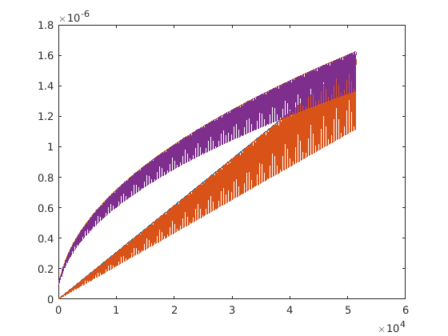
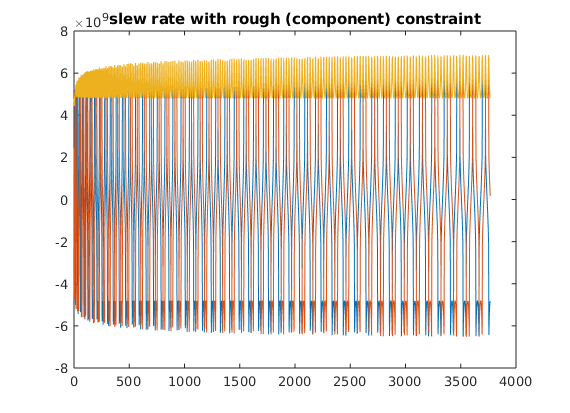
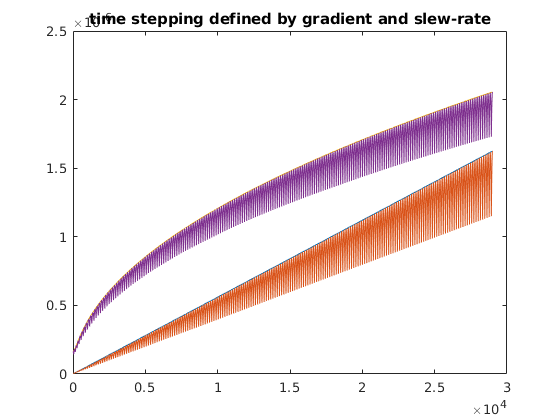
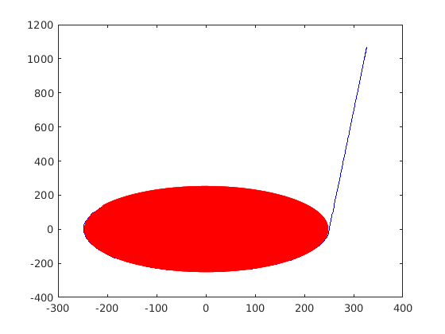

seq=mr.Sequence();
fov=256e-3; Nx=128; Ny=128;
thickness=3e-3;
Nslices=1;
Oversampling=2;
lims = mr.opts('MaxGrad',30,'GradUnit','mT/m',...
'MaxSlew',140,'SlewUnit','T/m/s',...
'rfRingdownTime', 30e-6, 'rfDeadtime', 100e-6, 'adcDeadTime', 10e-6);
[rf, gz] = mr.makeSincPulse(pi/2,'system',lims,'Duration',3e-3,...
'SliceThickness',thickness,'apodization',0.5,'timeBwProduct',4);
deltak=1/fov;
kRadius = round(Nx/2);
kSamples=round(2*pi*kRadius)*Oversampling;
readoutTime = 4.2e-4;
clear ka;
ka(kRadius*kSamples+1)=1i;
for c=0:kRadius*kSamples
r=deltak*c/kSamples;
a=mod(c,kSamples)*2*pi/kSamples;
ka(c+1)=r*exp(1i*a);
end
ka=[real(ka); imag(ka)];
[ga, sa]=mr.traj2grad(ka);
safety_magrin=0.97;
dt_gcomp=abs(ga)/(lims.maxGrad*safety_magrin)*lims.gradRasterTime;
dt_gabs=abs(ga(1,:)+1i*ga(2,:))/(lims.maxGrad*safety_magrin)*lims.gradRasterTime;
dt_scomp=sqrt(abs(sa)/(lims.maxSlew*safety_magrin))*lims.gradRasterTime;
dt_sabs=sqrt(abs(sa(1,:)+1i*sa(2,:))/(lims.maxSlew*safety_magrin))*lims.gradRasterTime;
figure;plot([dt_gabs; max(dt_gcomp); dt_sabs; max(dt_scomp)]');
dt_smooth=max([dt_gabs;dt_sabs]);
dt_rough=max([dt_gcomp;dt_scomp]);
dt_min=4*lims.gradRasterTime/kSamples;
dt_smooth0=dt_smooth;
dt_rough0=dt_rough;
dt_smooth(dt_smooth<dt_min)=dt_min;
dt_rough(dt_rough<dt_min)=dt_min;
figure;plot([dt_smooth0; dt_smooth; dt_rough0; dt_rough]');
t_smooth=[0 cumsum(dt_smooth,2)];
t_rough=[0 cumsum(dt_rough,2)];
kopt_smooth=interp1(t_smooth, ka', (0:floor(t_smooth(end)/lims.gradRasterTime))*lims.gradRasterTime)';
kopt_rough=interp1(t_rough, ka', (0:floor(t_rough(end)/lims.gradRasterTime))*lims.gradRasterTime)';
fprintf('duration orig %d us\n', round(1e6*lims.gradRasterTime*length(ka)));
fprintf('duration smooth %d us\n', round(1e6*lims.gradRasterTime*length(kopt_smooth)));
fprintf('duration rough %d us\n', round(1e6*lims.gradRasterTime*length(kopt_rough)));
[gos, sos]=mr.traj2grad(kopt_smooth);
[gor, sor]=mr.traj2grad(kopt_rough);
figure;plot([gos;abs(gos(1,:)+1i*gos(2,:))]');title('gradient with smooth (abs) constraint')
figure;plot([gor;abs(gor(1,:)+1i*gor(2,:))]');title('gradient with rough (component) constraint')
figure;plot([sos;abs(sos(1,:)+1i*sos(2,:))]');title('slew rate with smooth (abs) constraint')
figure;plot([sor;abs(sor(1,:)+1i*sor(2,:))]');title('slew rate with rough (component) constraint')
spiral_grad_shape=gos;
[rf, gz] = mr.makeSincPulse(pi/2,'system',lims,'Duration',3e-3,...
'SliceThickness',thickness,'apodization',0.5,'timeBwProduct',4);
gzReph = mr.makeTrapezoid('z',lims,'Area',-gz.area/2);
adcTime = lims.gradRasterTime*size(spiral_grad_shape,2);
adcSamplesPerSegment=1000;
adcSamplesDesired=kRadius*kSamples;
adcSegments=round(adcSamplesDesired/adcSamplesPerSegment);
adcSamples=adcSegments*adcSamplesPerSegment;
adcDwell=round(adcTime/adcSamples/100e-9)*100e-9;
adcSegmentDuration=adcSamplesPerSegment*adcDwell;
if mod(adcSegmentDuration, lims.gradRasterTime)>eps
error('ADC segmentation model results in incorrect segment duration');
end
adcSegments=floor(adcTime/adcSegmentDuration);
adcSamples=adcSegments*adcSamplesPerSegment;
adc = mr.makeAdc(adcSamples,'Dwell',adcDwell,'Delay',mr.calcDuration(gzReph));
spiral_grad_shape = [spiral_grad_shape spiral_grad_shape(:,end)];
gx = mr.makeArbitraryGrad('x',spiral_grad_shape(1,:),'Delay',mr.calcDuration(gzReph));
gy = mr.makeArbitraryGrad('y',spiral_grad_shape(2,:),'Delay',mr.calcDuration(gzReph));
gz_spoil=mr.makeTrapezoid('z',lims,'Area',deltak*Nx*4);
gx_spoil=mr.makeExtendedTrapezoid('x','times',[0 mr.calcDuration(gz_spoil)],'amplitudes',[spiral_grad_shape(1,end),0]);
gy_spoil=mr.makeExtendedTrapezoid('y','times',[0 mr.calcDuration(gz_spoil)],'amplitudes',[spiral_grad_shape(2,end),0]);
for s=1:Nslices
rf.freqOffset=gz.amplitude*thickness*(s-1-(Nslices-1)/2);
seq.addBlock(rf,gz);
seq.addBlock(gzReph,gx,gy,adc);
seq.addBlock(gx_spoil,gy_spoil,gz_spoil);
end
seq.setDefinition('FOV', [fov fov sliceThickness]*1e3);
seq.setDefinition('Name', 'spiral');
seq.write('spiral.seq');
seq.plot();
[ktraj_adc, ktraj, t_excitation, t_refocusing] = seq.calculateKspace();
figure; plot(ktraj');
figure; plot(ktraj(1,:),ktraj(2,:),'b');
hold;plot(ktraj_adc(1,:),ktraj_adc(2,:),'r.');
duration orig 514570 us
duration smooth 55770 us
duration rough 52860 us
Current plot held


  